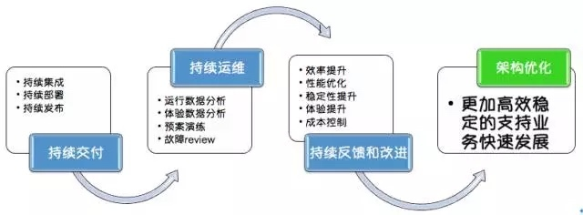
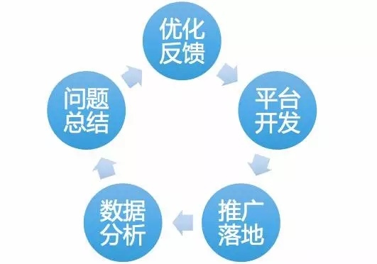

- 00 开篇词 带给你不一样的运维思考.md
- 01 为什么Netflix没有运维岗位？.md
- 02 微服务架构时代，运维体系建设为什么要以应用为核心？.md
- 03 标准化体系建设（上）：如何建立应用标准化体系和模型？.md
- 04 标准化体系建设（下）：如何建立基础架构标准化及服务化体系？.md
- 05 如何从生命周期的视角看待应用运维体系建设？.md
- 06 聊聊CMDB的前世今生.md
- 07 有了CMDB，为什么还需要应用配置管理？.md
- 08 如何在CMDB中落地应用的概念？.md
- 09 如何打造运维组织架构？.md
- 10 谷歌SRE运维模式解读.md
- 11 从谷歌CRE谈起，运维如何培养服务意识？.md
- 12 持续交付知易行难，想做成这事你要理解这几个关键点.md
- 13 持续交付的第一关键点：配置管理.md
- 14 如何做好持续交付中的多环境配置管理？.md
- 15 开发和测试争抢环境？是时候进行多环境建设了.md
- 16 线上环境建设，要扛得住真刀真枪的考验.md
- 17 人多力量大vs.两个披萨原则，聊聊持续交付中的流水线模式.md
- 18 持续交付流水线软件构建难吗？有哪些关键问题？.md
- 19 持续交付中流水线构建完成后就大功告成了吗？别忘了质量保障.md
- 20 做持续交付概念重要还是场景重要？看笨办法如何找到最佳方案.md
- 21 极端业务场景下，我们应该如何做好稳定性保障？.md
- 22 稳定性实践：容量规划之业务场景分析.md
- 23 稳定性实践：容量规划之压测系统建设.md
- 24 稳定性实践：限流降级.md
- 25 稳定性实践：开关和预案.md
- 26 稳定性实践：全链路跟踪系统，技术运营能力的体现.md
- 27 故障管理：谈谈我对故障的理解.md
- 28 故障管理：故障定级和定责.md
- 29 故障管理：鼓励做事，而不是处罚错误.md
- 30 故障管理：故障应急和故障复盘.md
- 31 唇亡齿寒，运维与安全.md
- 32 为什么蘑菇街会选择上云？是被动选择还是主动出击？.md
- 33 为什么混合云是未来云计算的主流形态？.md
- 35 以绝对优势立足：从CDN和云存储来聊聊云生态的崛起.md
- 36 量体裁衣方得最优解：聊聊页面静态化架构和二级CDN建设.md
- 37 云计算时代，我们所说的弹性伸缩，弹的到底是什么？.md
- 38 我是如何走上运维岗位的？.md
- 39 云计算和AI时代，运维应该如何做好转型？.md
- 40 运维需要懂产品和运营吗？.md
- 41 冷静下来想想，员工离职这事真能防得住吗？.md
- 42 树立个人品牌意识：从背景调查谈谈职业口碑的重要性.md
- 划重点：赵成的运维体系管理课精华（一）.md
- 划重点：赵成的运维体系管理课精华（三）.md
- 划重点：赵成的运维体系管理课精华（二）.md
- 新书 《进化：运维技术变革与实践探索》.md
- 特别放送 我的2019：收获，静静等待.md
- 结束语 学习的过程，多些耐心和脚踏实地.md
40 运维需要懂产品和运营吗？
在《云计算和AI时代，运维应该如何做好转型》这一期内容中，我提到两个转型建议：一个是技术产品，另一个就是技术运营。今天我就更加聚焦地来分享这个观点。
我们运维接触更多的是软件生命周期中的运行维护阶段，我之前总结过一张图，就是在这个阶段要做的一些事情，把它们串起来就是下图：

这张图的思路应该非常清晰了，而且对照一下我们日常在做的工作，基本上也离不开图中所描述的这些事情。
这里我想表达的是，我们应该从这张图中敏锐地观察到，研发团队对运维团队的诉求，以及运维呈现的价值已经发生了变化，我们更加需要能够帮助团队建设出高效运维体系的角色，而不是能够被动响应更多问题的角色。
运维的角色转变和价值体现
打造一个运维体系，我们完全可以把它类比为一个产品业务体系。我们公司的组织架构中，针对一个产品或业务，如果要对其进行技术上的实现，自然就离不开类似运营提需求，产品分析设计、业务架构师设计建模、开发实现以及测试保障这样一环套一环的配合，每个角色都发挥着独特的价值。
那么，对于一个运维体系，就相当于是面向研发团队内部的一套技术业务体系，只不过我们的需求方和客户是开发人员，而不是业务人员。
我们对照一下可以发现，运维团队中技术环节的角色是不缺的，但是缺少的是业务环节的产品和运营角色。但是我们做事情，不一定非要有岗位上的明确设置才能往下做，只要有能起到这个作用的人承担这样的职责就够了。而这里，最合适做这个事情的，一定是运维，因为运维是日常线上运维的执行者，只有运维最清楚这里面的细节、问题和痛点，换其他人可能很难能够讲清楚。
当然了，我们也不能强制要求运维一定要完全具备产品经理和运营经理的专业素养，这样就本末倒置了。这里我们强调的是运维要有产品和运营意识，总结起来最本质的就两点：第一，能将需求讲清楚；第二，能将产品推广落地。
技术产品
关于技术产品，其实主要就是回答以下几个问题：
- 是不是能够把原本靠人工完成的很多工作转化成需求？
- 是不是能够把日常工作中运维和开发的痛点转化成需求？
- 是不是能够把当前系统存在的问题和隐患找出来，在解决的过程中，经过分析总结提炼成需求？
这个过程中，可以尝试把自己做的事情串一下，用流程图也好，时序图也好，把整个过程梳理一下。过程中每个环节具体要做的事情可以通过文字描述的方式写出来，尽量分条罗列，清晰有条理。这里也可以参考我们前面讲过的内容，把一些标准化和生命周期管理的方法论融进来。这样可以一举两得，我们的标准化制定能力，场景需求分析能力慢慢都提升上来了。
你可以按照我们刚才讲的内容动手做一下，这样整理出来的一份文档或者内容，其实就是一个产品PRD的雏形。如果你想要更进一步，有更加专业的输出，也可以参考了解一些产品设计方面的知识。
当需求提炼出来之后，跟对应的运维开发一起合作，将需求真正落地实现。这样一个过程下来，运维的价值和能力体现是不是就跟之前有了很大的不同呢？
技术运营
通过上面技术产品的工作，可以做出一些有针对性的工具和平台来。但是，仅仅有工具和平台还远远不够，因为只有把这个平台真正落地，并产生了实际效果，才是有意义、有价值的。这个“真正落地”就是技术运营要做的事情。
所以，接下来要做的就是落地。
- 平台推广落地。工具做出来了只是第一步，得要有人用，这就需要去推动落地，让大家都来使用，从而真正给团队带来规模上的效率提升。同时，我们的技术产品也是各种标准和规范的载体，在这个落地过程中，也是标准落地和执行的过程，就需要运维和开发配合做出一些改造，为后续更大规模的效率提升和平台建设打下基础。
- 线上运行数据分析。通过我们的平台和工具，对线上业务和应用运行时的指标进行数据分析。比如，应用上线或者每次变更上线后，线上运行的情况是怎样的，容量有没有降，RT有没有上涨，监控有没有异常，用户体验有没有下降，用户和客服的反馈如何等等。以上这些维度和指标就需要通过数据、图表和曲线的方式呈现出来，并基于这些呈现进行分析和判断，做出后续运维决策，比如是否需要扩缩容，是否需要处理问题，是否有改进的地方。在这一点上，应该要形成对整个业务和技术架构体系改进和完善的正反馈才行。想想看，业务运营是不是也非常关注业务的数据报表，也要依赖数据情况决定后续的业务运营手段。
- 过程改进。平台更多的是一个执行工具，但是工具的使用是要配合大量的标准和流程一起来运作的。比如上面我们提到的，如果一次发布之后流量下降，RT升高很多，面对这样的问题我们应该有怎样的应对机制，这里就体现出管理和流程的重要性了，要解决好不同角色和团队之间的协作问题。同时，过程中需要改进和完善的内容，能够落实到平台和工具的，也要形成正反馈，来提升我们工具和平台的效率。
这个过程可以用下图来表示：

我们面临的业务场景在不断发展和变化，这就决定了技术运营过程也必然是一个持续发展和完善的过程。所以从这个角度讲，技术运营的生命力和竞争力将会是持久的。
在腾讯，运维就被定义为技术运营，第一次听到这个岗位名称时，感觉还是很贴切的。另外，我在很多大会上听海外的华人工程师分享，Operation这个词都是被直译成运营，但是在国内我们大多还是把Operation翻译成运维，从字面上就把这个岗位的定位给拉低了。
不过，叫什么不重要，只要我们通过今天的内容看到，具备技术产品和技术运营的能力才是最关键的，这一点最重要。
总结
最后，我们再总结一下，运维虽然不是业务系统的实现者和代码的开发者，但是我们参与到了产品技术标准的制定、业务系统运维体系的建设以及后期的技术运营中，这个时候运维已然成了整个技术架构的设计者之一，而且是架构稳定和演进的看护者，这时我们所发挥的作用和呈现的价值已大不相同。
从技术产品和技术运营的角度再来思考一下运维，现在的运维还是之前那个运维吗？欢迎你留言与我一起讨论。
如果今天的内容对你有帮助，也欢迎你分享给身边的朋友，我们下期见！
© 2019 - 2023 Liangliang Lee. Powered by Vert.x and hexo-theme-book.